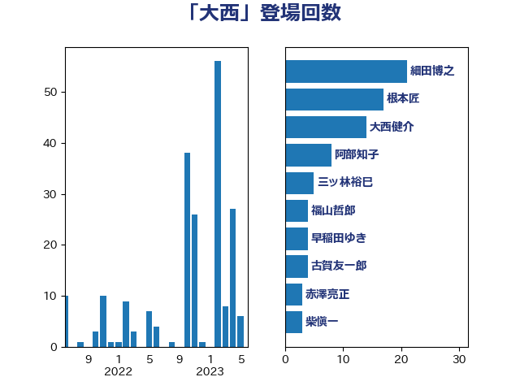

単語「大西」

| 細田博之 | 自由民主党 | 21 回 |
| 根本匠 | 自由民主党 | 17 回 |
| 大西健介 | 立憲民主党 | 14 回 |
| 阿部知子 | 立憲民主党 | 8 回 |
| 三ッ林裕巳 | 自由民主党 | 5 回 |
| 福山哲郎 | 立憲民主党 | 4 回 |
| 早稲田ゆき | 立憲民主党 | 4 回 |
| 古賀友一郎 | 自由民主党 | 4 回 |
| 赤澤亮正 | 自由民主党 | 3 回 |
| 柴愼一 | 立憲民主党 | 3 回 |
| 東徹 | 日本維新の会 | 3 回 |
| 木原誠二 | 自由民主党 | 3 回 |
| 後藤祐一 | 立憲民主党 | 3 回 |
| 山本香苗 | 公明党 | 3 回 |
| 小倉將信 | 自由民主党 | 3 回 |
| 宮本徹 | 日本共産党 | 3 回 |
| 伊藤孝恵 | 国民民主党 | 3 回 |
| 高木毅 | 自由民主党 | 2 回 |
| 高市早苗 | 自由民主党 | 2 回 |
| 谷公一 | 自由民主党 | 2 回 |
| 西村康稔 | 自由民主党 | 2 回 |
| 窪田哲也 | 公明党 | 2 回 |
| 稲津久 | 公明党 | 2 回 |
| 福島伸享 | 無所属 | 2 回 |
| 海江田万里 | 立憲民主党 | 2 回 |
| 河野太郎 | 自由民主党 | 2 回 |
| 横山信一 | 公明党 | 2 回 |
| 松野博一 | 自由民主党 | 2 回 |
| 松島みどり | 自由民主党 | 2 回 |
| 後藤茂之 | 自由民主党 | 2 回 |
| 岡田直樹 | 自由民主党 | 2 回 |
| 山添拓 | 日本共産党 | 2 回 |
| 山口俊一 | 自由民主党 | 2 回 |
| 中島克仁 | 立憲民主党 | 2 回 |
| 中山展宏 | 自由民主党 | 2 回 |
| 上月良祐 | 自由民主党 | 2 回 |
| 高橋千鶴子 | 日本共産党 | 1 回 |
| 高木かおり | 日本維新の会 | 1 回 |
| 青木愛 | 立憲民主党 | 1 回 |
| 長峯誠 | 自由民主党 | 1 回 |
| 鈴木貴子 | 自由民主党 | 1 回 |
| 鈴木英敬 | 自由民主党 | 1 回 |
| 鈴木敦 | 国民民主党 | 1 回 |
| 野田聖子 | 自由民主党 | 1 回 |
| 足立康史 | 日本維新の会 | 1 回 |
| 藤岡隆雄 | 立憲民主党 | 1 回 |
| 藤丸敏 | 自由民主党 | 1 回 |
| 荒井優 | 立憲民主党 | 1 回 |
| 若宮健嗣 | 自由民主党 | 1 回 |
| 自見はなこ | 自由民主党 | 1 回 |
| 美延映夫 | 日本維新の会 | 1 回 |
| 秋葉賢也 | 自由民主党 | 1 回 |
| 福島みずほ | 社会民主党 | 1 回 |
| 磯崎仁彦 | 自由民主党 | 1 回 |
| 石田昌宏 | 自由民主党 | 1 回 |
| 牧原秀樹 | 自由民主党 | 1 回 |
| 源馬謙太郎 | 立憲民主党 | 1 回 |
| 浜田靖一 | 自由民主党 | 1 回 |
| 浅野哲 | 国民民主党 | 1 回 |
| 江田憲司 | 立憲民主党 | 1 回 |
| 永岡桂子 | 自由民主党 | 1 回 |
| 本田顕子 | 自由民主党 | 1 回 |
| 木村英子 | れいわ新選組 | 1 回 |
| 星野剛士 | 自由民主党 | 1 回 |
| 斎藤アレックス | 国民民主党 | 1 回 |
| 徳永エリ | 立憲民主党 | 1 回 |
| 岸田文雄 | 自由民主党 | 1 回 |
| 岡本あき子 | 立憲民主党 | 1 回 |
| 山際大志郎 | 自由民主党 | 1 回 |
| 山田宏 | 自由民主党 | 1 回 |
| 山井和則 | 立憲民主党 | 1 回 |
| 尾崎正直 | 自由民主党 | 1 回 |
| 大西英男 | 自由民主党 | 1 回 |
| 大串正樹 | 自由民主党 | 1 回 |
| 堀内詔子 | 自由民主党 | 1 回 |
| 和田義明 | 自由民主党 | 1 回 |
| 吉田久美子 | 公明党 | 1 回 |
| 古川禎久 | 自由民主党 | 1 回 |
| 伊佐進一 | 公明党 | 1 回 |
| 井坂信彦 | 立憲民主党 | 1 回 |
| 中野英幸 | 自由民主党 | 1 回 |
| 中谷真一 | 自由民主党 | 1 回 |
| 上野賢一郎 | 自由民主党 | 1 回 |